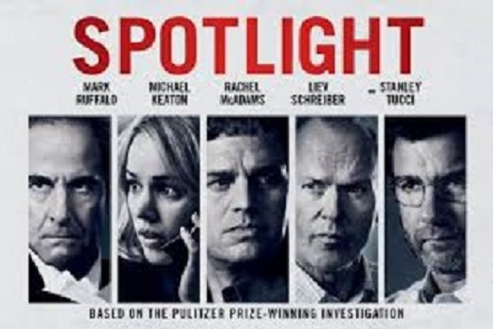
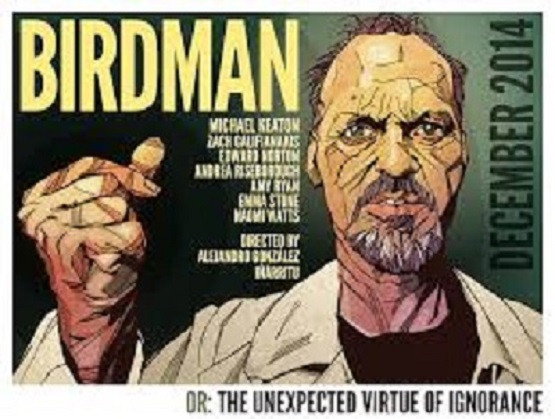

Spotlight - 2015
Baseado em uma historia real, o drama mostra um grupo de jornalistas em Boston que reune milhares de documentos capazes de provar diversos casos de abuso de criancas, causados por padres catolicos. Durante anos, lideres religiosos ocultaram o caso transferindo os padres de regiao, ao inves de puni-los pelo caso.

Birdman - 2014
No passado, Riggan Thomson (Michael Keaton) fez muito sucesso interpretando o Birdman, um super-heroi que se tornou um icone cultural. Entretanto, desde que se recusou a estrelar o quarto filme com a personagem, sua carreira comecou a decair. Em busca da fama perdida e tambem do reconhecimento como ator, ele decide dirigir, roteirizar e estrelar a adaptacao de um texto consagrado para a Broadway. Entretanto, em meio aos ensaios com o elenco formado por Mike Shiner (Edward Norton), Lesley (Naomi Watts) e Laura (Andrea Riseborough), Riggan precisa lidar com seu agente Brandon (Zach Galifianakis) e seu relacionamento conturbado com sua ex-esposa (Amy Ryan) e com sua filha (Emma Stone). No meio dessa tensao da pre-estreia, ele comeca a ser atormentado por uma estranha voz que insiste em permanecer em sua mente.